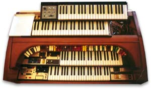
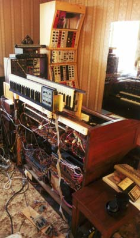
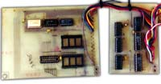
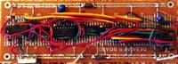

|

|
|

As mentioned before, I was finding the organ too tall to put the keyboards on. The solution was simple enough. The top of the organ was removed, and the lower synth keyboard (ex System 100M) was set into the organ at an angle I found comfortable to play. This saved me about three inches. It was also positioned to favor playing with the left hand. The second synth keyboard (the SH5 monophonic keyboard) was mounted behind the first, also at an angle. Both keyboards swing up for access.
There are some gaps to fill in the panel work, and I may put some controls there. Some circuits I add are more appropriate to the organ than the synth, so there isn't a lot of point in turning them into a module.
At the moment, I have a computer monitor and keyboard balanced at the left end, as I am using a 486 to scan the ex System 100M keyboard. Currently the software is sufficient to run the keyboard as low-note priority monophonic. There are only two oscillators connected to it, both of them digital in nature. The output frequency of these digital oscillators is quite high, making it mandatory to feed them through a wave-table module to be be able to hear anything! More oscillators will be added in time. I don't expect there will be much consistency in design either, as I will be using some other older digital oscillators that operate at a much lower frequency. New oscillators will be developed on an individual basis, as I find ways to improve the design.

I started building the first digital oscillator back in 1984! It was always intended to drive a wave table, and was based on a proposal in a local electronics mag, though the proposed design was running such that it's output was at audio frequency, not 64 times higher. It uses a 32 MHz master oscillator, feeding a divider chain to give 8 octaves. A 74LS151 selects the octave then feeds it to an 8-bit programmable divider. The pitch isn't quite as accurate as the classic TOS chips, which would require a minimum of 9 bits, but is still pretty good. There were several problems found with this beast. For a start, the top 74LS193 divider in the programmable section had to be selected as it is being run well out of spec. The design was originally done so that one master oscillator and divider chain would drive several of the programmable divider sections. Only one PCB was ever made, and this has been cut down to remove all of the digital "VCA" and wave table sections, in favor of using new designs. The board to the left is the master oscillator and divider, while the board to the right is the programmable divider. The two empty sockets on the left board used to contain lookup ROMs that converted numerical sequence (i.e. 1 to 84) into the correct divider values. Now this conversion is handled by a lookup table in the software.

The second digital oscillator was lashed up on some experimenter board, and is a 12 bit programmable divider running at 24 MHz. 24 Mhz is almost the maximum these old 74LS chips will run, and in fact with this module, I was unable to even get it to work at the 25 MHz specified maximum of the devices. At some point in the design, my brain stepped out for a break, because the divider should really have been 16 bits. As it is I don't have the full range I required, though the range is sufficient for the keyboard with Middle C in it's correct location.
All will ultimately be interfaced to sequencer software also handled by the 486. Have you noticed my failure to mention Midi? That is because I don't use Midi, and expect I never will.
|